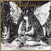
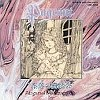
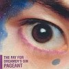

strange music page
japanese progressives * * * pageant/Mr.Sirius
|
#ページェントは永井博子を中心としたグループ（初期は中島一晃が中心となっていた）フルアルバムとしては２枚のみ出して現在は解散。その後中島一晃は夜来香のアルバムをリリース、永井博子（大木理紗）はゲームのサントラなどで活躍して、最近ソロアルバムを出した。個人的には1stの螺鈿幻想はこの手の音楽の中で１番好きなアルバムです。
|
- ページェント (pageant)
- Mr.Sirius
- SIRIUS
- 夜来香
- 大木理紗
|
#1985年にリリースされた１枚目、アルバムを通してある種独特な湿ったな雰囲気が感じられます。Genesisの影響も濃いのですが、プログレとかそういう事よりこのアルバムの雰囲気は日本からしか生まれえないものだと思います。個人的には日本のシンフォ系の中では別格に思っています。

- 螺鈿幻想 (la mosaique de la reverie)
- ヴェクサシオン (vexacion)
- 木霊
- 人形地獄
- 夜笑う
- セルロイドの空
- Epilogue
- 中嶋一晃 (electric guitars)
- 永井博子 (vocals,keyboards)
- 引頭英明 (drums,percussions)
- 宮武和弘 (flute,acoustic guitars)
- 長嶋伸行 (bass)
MADE IN JAPAN RECORDS MIJ-1005 (1986)
KING RECORDS/CRIME: 292E-2007 (1989.4.21)
MADE IN JAPAN RECORDS MJC-1009
#既発曲のライヴと新曲で構成されたミニアルバム('87)に数曲プラスした再発盤です。仮面の笑顔(好きなんです、この曲)の別バージョンが2曲も入っているのが嬉しいところ。

- 人形地獄
- 真夏の夜の夢
- ヴェクサシオン
- 奈落の舞踏会 (live version)
- 仮面の笑顔 (live version)
- 木霊 including "James and cold gun" (live version)
- 奈落の舞踏会
- 仮面の笑顔 (flute version)
- 蜘蛛の館 (long version)
- 永井博子 (vocals,keyboards)
- 中嶋一晃 (guitars)
- 山田和彦 (bass)
- 引頭英明 (drums,percussions)
- 宮武和弘 (flute on 3.8.)
- 長嶋伸行 (bass on 3.)
MADE IN JAPAN RECORDS: MJC-1008 (1994)
#編集盤です。蜘蛛の館のショートバージョン以外は螺鈿幻想と奈落の舞踏会で聞くことができます。
- 螺鈿幻想 (la mosaique de la reverie)
- ヴェクサシオン (vexacion)
- 人形地獄
- 仮面の笑顔
- 奈落の舞踏会 (abysmal masquarade)
- 蜘蛛の館
- 木霊
- エピローグ
- 中嶋一晃 (guitars)
- 永井博子 (vocals,keyboards)
- 山田和彦 (bass)
- 引頭英明 (drums,percussions)
- 長嶋伸行 (bass on 1.2.7.8.)
- 宮武和弘 (flute on 1.2.8.)
CROWN/VICE: ECD-1013 (1988.1.21)
#メンバー大幅変更後の2枚目のフルアルバム、中島一晃さんが居なくなったことでほとんど永井博子さんの色でできあがっています。完成度は1枚目と較べても遜色無いとおもいます。ただ個人的には中嶋さんのセンスが好きだったので、ちょっと残念です。

- 海の詩 (a mare)
- グレイの肖像 (the picture of drian grey)
- アルカノイド (alkaloid)
- ラピスラズリ幻想 (lapis lazuli)
- a forget-me not
- パペチュアル・パーフェクション (perpetual perfection)
- 永井博子 (vocals,keyboards)
- 引頭英明 (drums,percussions)
- 前野弘之 (guitars)
- 加山有三 (keyboards,piano)
- 山田和弘 (bass)
- 宮武和弘 (flute on 2.4.)
- 鞜野幸英 (percussion on 3.)
KING RECORDS/CRIME: 292E-2008 (1989.4.21)
KING RECORDS/NEXUS: KICS-2533 (1998.4.30)
#
kasaya.comさんのインターネットショップで購入しました。Mr.Siriusの1st.以前のテープです。こんな貴重な物が簡単に自宅にいながら買えるなんていい時代になったものです。あ、ちなみにkasaya.comではMADE IN JAPANやKING RECORD系の日本プログレはほとんど買えます。
ちなみにこのテープはそれほど音質は良くないですが、CD未収録の曲が2曲入ってます。他の曲もアレンジ違いですし、日本プログレが好きな人だったら必聴だと思います。
A-SIDE:
- Step into Easter
- 窓 -fenetre
- さよならエリック
B-SIDE:
- Theme from "Barren Dream" (不毛の夢)
- Mr.Sirius (flute,guitars,keybaords,bass,accordion)
- 永井博子 (vocals)(accordion solo on A-2.)
- 藤岡千尋 (drums)
MADE IN JAPAN RECORDS (1986)
#Mr.Siriusこと宮武和広の１枚目、非常に作り込まれた、日本のプログレの代表的な作風。マリノの大谷令文やケンソーの清水義央など参加しています、完成度では次作の方が上だと思いますが、意気込みというかとても気持ちの伝わってくるアルバムです。個人的にはこの1枚目の方が好きです。
- 峡谷倶楽部 (all the fallen people)
- overture
- madrigal
- rhapsody
- fantasy
- Sweet Revenge
- Step Into Easter
- 間奏曲 (intermezzo)
- エターナルジェラシー (eternal jelousy)
- prelude
- intake
- stillglow
- return
- Lagrima
- 不毛の夢 (barren dream)
- Mr.Sirius (keyboards,flute,bass,acoustic guitar)
- 永井博子 (vocals)
- 藤岡千尋 (drums,percussions)
- 清水義央 (guitars on 7.)
- 小川文明 (keyboards on 5.)
- 大谷レイヴン (guitars on 5.)
KING RECORDS/CRIME: 280E-2025 (1987)
#Mr.Siriusの２枚目、細部にわたって緻密に作られている上に、アルバム全体の流れと言うかまとまりも有って日本のシンフォ系では１、２を争う名作だと思われます。とにかく完成度が非常に高いので安心して聴くことができます。
- ファンファーレ (fanfare)
流れる影(legal dance)
- Love Incomplete
- A Land Dirge
- スーパージョーカー (super joker)
- 挽歌-海 (a sea dirge)
- ナイルの虹 (the Nile for a while)
- Chace for Infinity
- 忘郷 (home forgotten)
- Dual Sight
- Colony
- Bliss for a Day
- 光の果て (beyond the glory)
- レクイエム ニ短調 (requiem D moll)
- 宮武和広 (flute,acoustic guitars,keyboards)
- 大木理紗 (vocals)
- 藤岡千尋 (drums,percussions)
- 村岡秀彦 (bass)
- 釜本茂一 (electric guitars)
- 高山博 (orchestration on 7.)
KING RECORDS/CRIME: KICP-69 (1990)
KING RECORDS/NEXUS: KICS-2525 (1994.3.5)
KING RECORDS/NEXUS: KICS-2826 (1998)
#ライヴ盤、コテコテのＭＣも完全収録しています。あれだけの複雑な曲をほぼ完全に再現してる上テンションの高さも尋常では無いです。１回で良いからライヴを見てみたいです。
- Opening/Requiem
Advance Billing
Madrigal (from "all the fallen people")
Time in The Emage
Babooshka/Love Incomplete
- Kokan De Jealousy
Siberian Khatru '90
Barren Dream/Grand Finale
- 宮武和広 (keyboards,flute,guitars)
- 大木理紗 (vocals)
- 藤岡千尋 (drums,percussions)
- 村岡秀彦 (bass)
- 釜木茂一 (guitars)
- 難波弘之 (organ on "siberian khatru")
- 大谷レイヴン (guitars on "siberian khatru")
- 宮武美代子 (backing vocal on "madrigal")
MADE IN JAPAN RECORDS: MCB-001 (1992)
#Mr.Siriusの"SIRIUS"時代の音源です。複雑なのにスムーズに流れて行くような気持ち良い曲はこの頃からのものですね。Mr.SIRIUSに直接繋がるよーな曲調とかも有って面白いです、アルバムとして作られたものでは無いので統一感は無いですけど。
一瞬スウェーデンのISILDURS BANEとか想像しちゃいました(....わかりにくい連想.....)
- 月下美人 (suite)
- Crystal Voyage
- Land Of Eternity
- Two Will Be One
- Wanderer
- 宮武和広 (keyboards,flute,guitars)
MADE IN JAPAN RECORDS: MCD-2919 (1992)
#中嶋一晃さんの新バンド夜来香です、Pageantの1枚目のあの雰囲気を大きく残すものです、メンバーも夢幻の林克彦さん等参加しています。2曲目7曲目がとても好きです、アルバムを発表した後に何回かライヴを行なったのみでその後は音沙汰が無いようで、とても残念です。
- 月光円舞曲
- 何処へ行くの夏
- うつむく女
- 親愛なるキティへ
- 夢人形
- 告白ボレロ
- あの空
- 中嶋一晃 (guitars)
- 林克彦 (keyboards,organ,synthesizers)
- 浜田勝紀 (bass)
- 井上信二郎 (drums,percussions)
- 外田直美 (vocals)
- 簑部純子 (violin on 1.6.)
MADE IN JAPAN REACORDS: MJC-1005 (1994)
#ま、まさか、今更この手のCDを買うとは.....自分でもちょっと驚いてます。新宿ディスクユニオンのプログレフロアにて、ほんとは「RUINSの新譜あるかなー？」とか思ってそのコーナーを覗いたんですけど。中島一晃さんの夜来香の92年のライヴです。
このバンド、ライヴ見れるチャンスが有ったのに見れないで終わってしまったので、思わず買っちゃいました。とりあえず聴きたかったのは2,4,7曲目....特に2曲目、何でかわからないんですけどとても思いいれが有ります、あまり人に言えないんですけど。5曲目はkeyboardの林さんの昔のバンド、夢幻の曲ですね....このボーカル苦手だけど。
やっぱ人間20年以上生きると、一度好きになったモノは変わらないみたいですね。久しぶりにこーゆーシンフォニックな曲を聴くのもイイものです。
ちなみに中島一晃さんは浪漫座ってバンドやってるみたいです。
ホームページはここです、無断リンクですけど。リアルオーディオの浪漫座の曲はとても良かったです。もぉ11月のシルエレのライヴ、こっそり行く事に決めました。(2000.7.22)
- イントロダクション〜月光円舞曲
- 何処へ行くの夏
- うつむく女
- 夜笑う
- エドモンドの古い鏡
- 告白ボレロ
- メンバー紹介〜あの空
- ナオミ (vocals)
- 中嶋一晃 (guitars)
- 林克彦 (keyboards)
- 浜田勝徳 (bass)
- 井上伸二郎 (drums)
- 池田真紀子 (violin on 5.)
- 中村隆士 (vocals on 5.)
IRS-001
#ほとんど大木さんの声のみで作られたアルバム。３曲目以外はカバー曲です。PageantとかMr.Siriusでの大木理紗さんを期待して買うと少し違うかも知れないですが、大木さんのファンなら買っても損はしないと思います。とりあえず３曲目と４曲目だけでも。
- 別れの情景 I
- 哀しみにさようなら
- 遠い景色
- 天使と小悪魔 (Moving)
- フレンズ
- 大木理紗 (vocals,arrangement)
- 渕野繁雄 (alto sax on 1.)
- 野力奏一 (keyboard on 1.)
CANDY RECORD: CACE-2002 (1996)
#スクウェアのRPGのFinal Fantasyのボーカルアルバムです。全曲を大木理紗さんが歌っています。もちろんプログレでは無いですが。大木理紗さんが好きなら楽しめるアルバムだと思います。
- Prelude
- The Promised Land (main theme)
- Mon P'tit Chat (思い出のオルゴール)
- 時の放浪者 (ティナのテーマ)
- 光の中へ (愛のテーマ)
- Esperanca Do Amor (親愛なる友へ)
- Voyage (果てしなき大海原)
- An Palais De Verre (マトーヤの洞窟)
- Once You Meet Her (水の巫子)
- Pray (final fantasy)
- Nao Chora Menina (街角の子供たち)
- 大木理紗 (vocals)
- 植松伸夫 (composed,arrangement,synthesizers)
Polystar/NTT出版: PSCN-5006 (1994.6.25)
#Final Fantasyの企画物の第２弾です。今回は野口郁子さん(遊佐未森さんのバックコーラスとかやっている人)と半々ずつくらいの割合です。ピアノと大木理紗さんのボーカルのみの曲などもあります。好みもあるのかもしれませんが、声の存在感が違うというか、改めて凄いなと感じました。
- Long Distance [Final Fantasy 4 メインテーマ]
- 悠久の風 [悠久の風 (F.F.3)]
- Have You Ever Seen Me ? [小人の村トーザス (F.F.3)]
- Valse des Amoureux [a newly written]
- GAIA [メインテーマ (F.F.1)]
- 遠い日々の名残り [郷愁 (F.F.5)]
- はるかなる故郷 [はるかなる故郷 (F.F.5)]
- Estrelas [ギルバートのリュート (F.F.4)]
- 神の揺り篭 [リムルのテーマ (F.F.4)]
- Love Will Grow [フィナーレ (F.F.2)]
- Prelude [プレリュード]
- 大木理紗 (vocals)
- 野口郁子 (vocals)
- 植松伸夫 (composed,arrangement,synthesizers)
Polystar/NTT出版: PSCN-5041 (1995.11.25)
#シングルです、エメラルドドラゴンというOVAの主題歌らしいです。五つの雫は作詞作曲大木理紗さんです。大木理紗さんの作曲はページェントの２枚目以来だと思います。ちなみに個人的には笠原弘子さんも好きです。
- 五つの雫
- 約束の旅へ
- 五つの雫 (instrumental version)
- 約束の旅へ (instrumental version)
- 大木理紗 (vocals on 1.)
- 笠原弘子 (vocals on 2.)
DATAM Polystar: DPDX-5017 (1995.6.25)